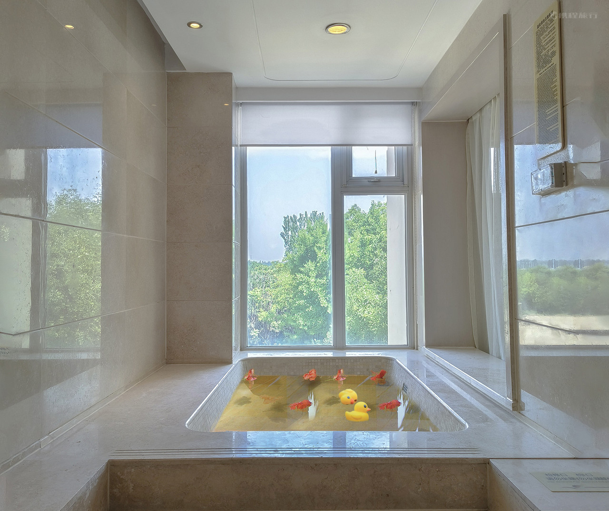
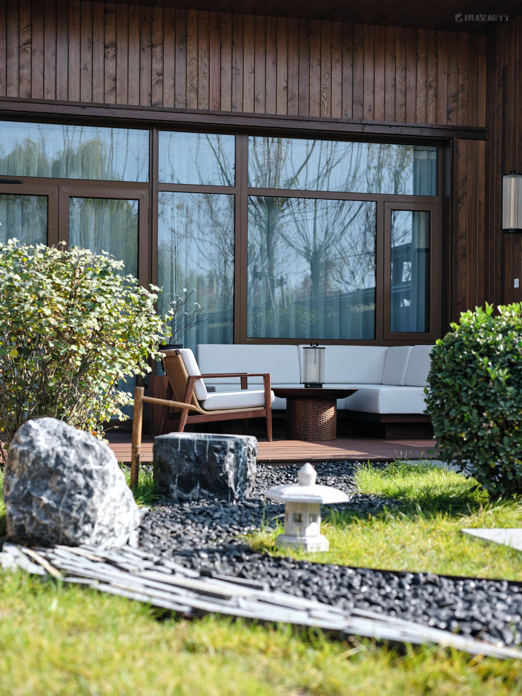
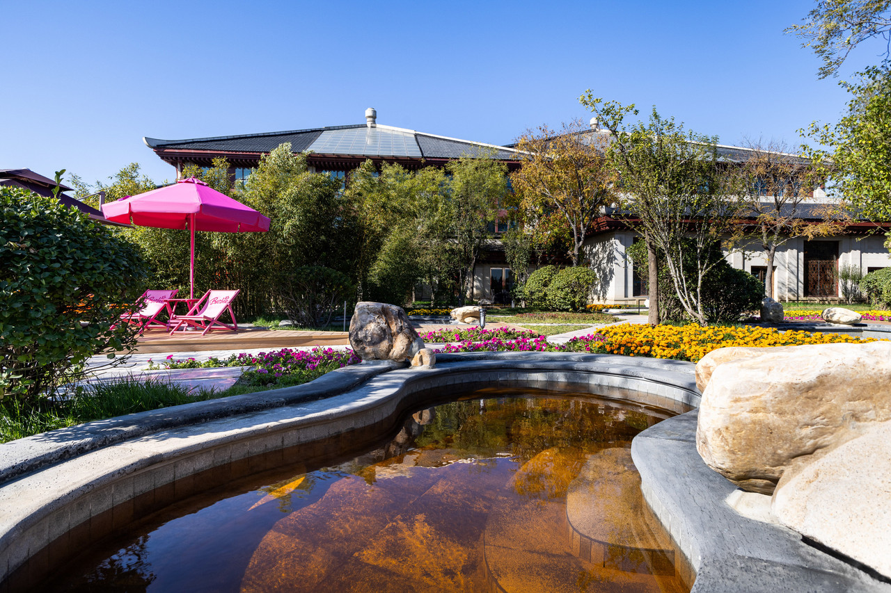

YUANWANG
INTERNATIONAL · SPA ENGINEERING
EN
中文
YUANWANG · BEIJING · EST. 2002
The architecture of water.
REAL PROJECT PHOTOGRAPHY / 工程实景摄影
01 / OUR GROUP
01 / MASTER PLANNING
02 / MEP ENGINEERING
03 / ENERGY SYSTEMS
REAL DESTINATIONS / 真实工程空间
2002
100+
50+
02 / SERVICES & PRODUCT LINES

01 / WELLNESS

02 / WATER TECHNOLOGY
03 / DELIVERY
03 / DELIVERY MODEL

04 / VERIFIED SOURCE PHOTOGRAPHY
ALL / 全部
RUILINWAN / 瑞麟湾
QINGLIANGWAN / 清凉湾
GUANGHEGU / 光合谷
05 / ENGINEERING TECHNOLOGY
WATER QUALITY
ENERGY
IMMERSIVE EXPERIENCES
06 / SIGNATURE PRODUCTS
STAINLESS STEEL / 不锈钢
TRANSPARENT ACRYLIC / 透明亚克力
IMMERSIVE / 沉浸式
07 / FULL-SERVICE ENGINEERING
WATER & MEP
GEOTHERMAL & PLC
AFTER-SALES
06 / INTERNATIONAL TRADE
UNITED KINGDOM
CE / UKCA
EUROPEAN UNION
EU Product Compliance
UNITED STATES
NSF / Local Codes
07 / CONTACT
+86 10 5861 4186
+86 136 0129 3826
+44 7796 648635
WHATSAPP
+44 7796 648635
EMAIL
chenming20020808@gmail.com
www.wenquan114.com
·
dire114.com
Hot spring resort design / 温泉规划设计
Water treatment & MEP / 水处理机电
Spa equipment procurement / SPA设备采购
Geothermal energy / 地热能源
Other cooperation / 其他合作
✕